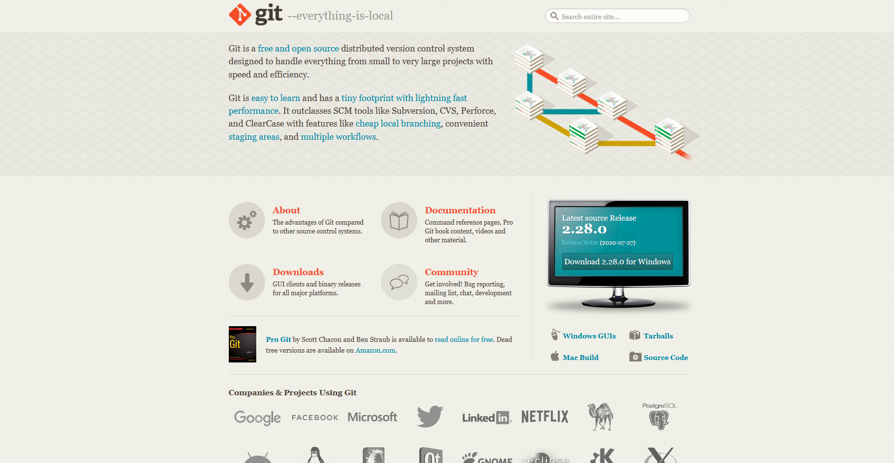
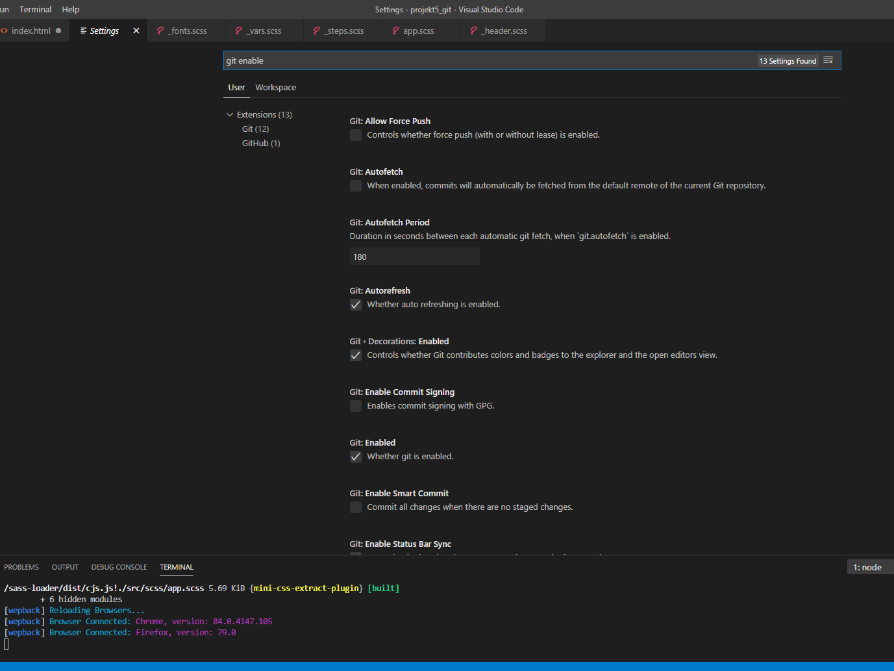
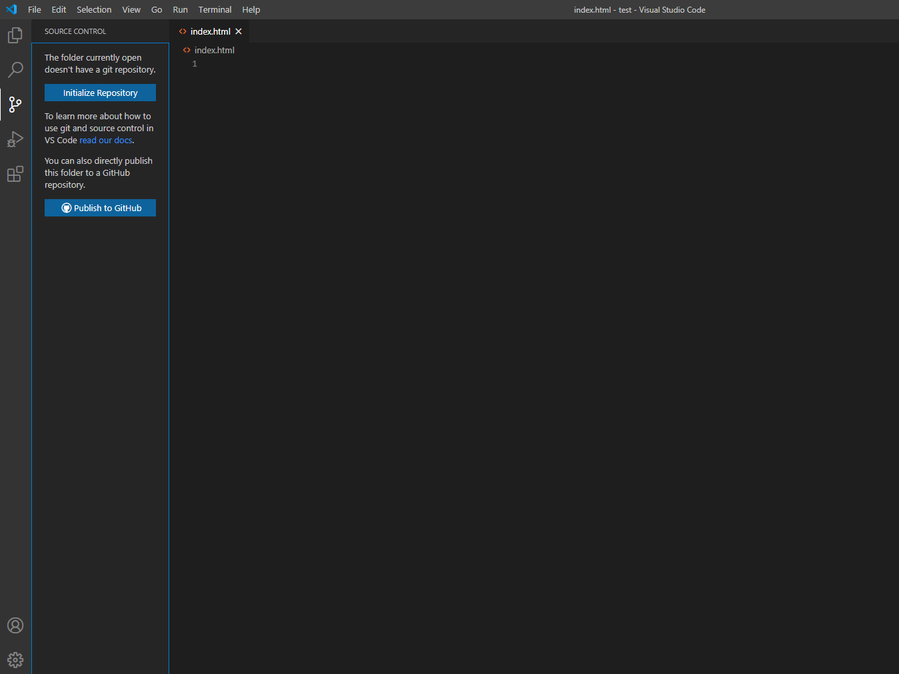
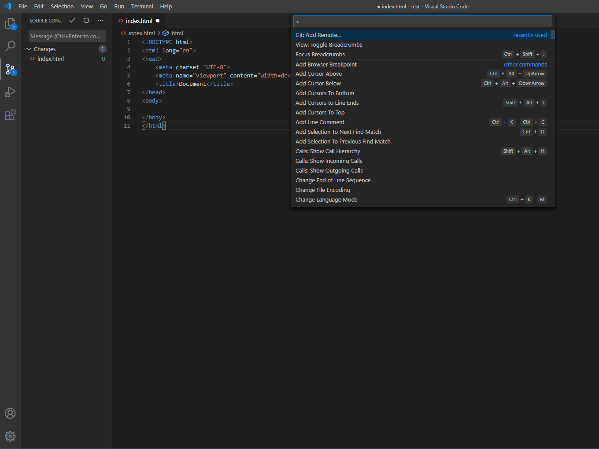
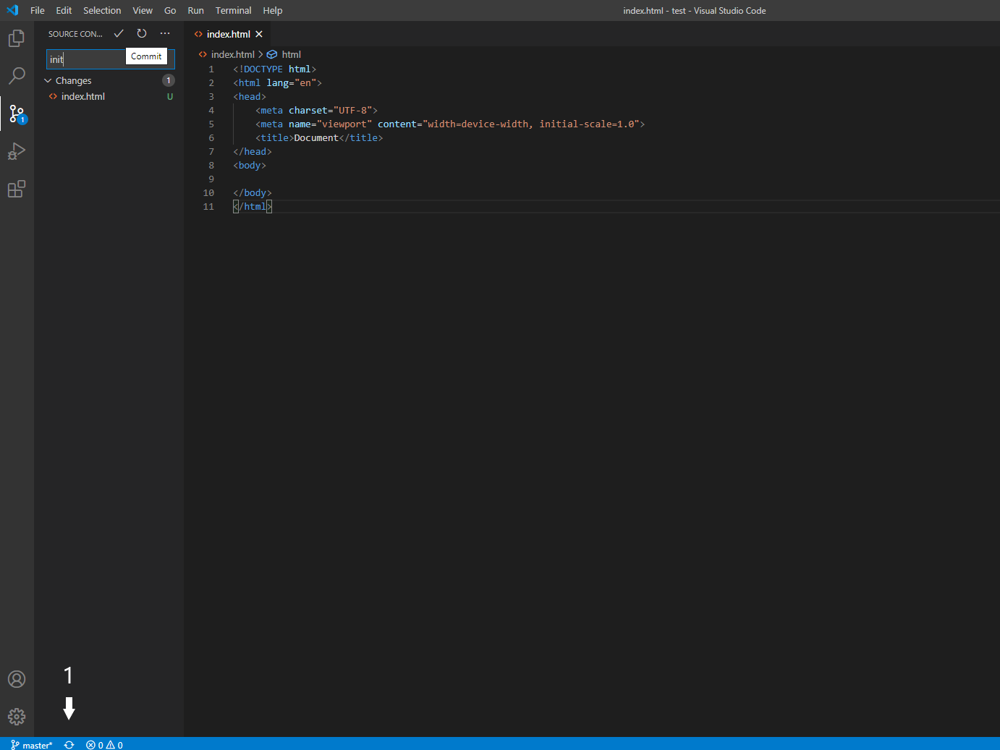

Download Git from git-scm.com
Go to settings by pressing Ctrl + , and make sure that Git: Enabled is checked.
Open existing project with VSC. Go to Source Control menu (Ctrl + Shift + G) and click Initialize Repository.
Create new repository in your GitHub. In VSC go to View -> Command Palette and select Git:Add Remote. Paste URL to your GitHub repository and select a name.
To commit write init in message window (init for 1st commit, later use it for describing changes in your commits) and click checkmark. To push click icon at the bottom-left side ( 1 ).
